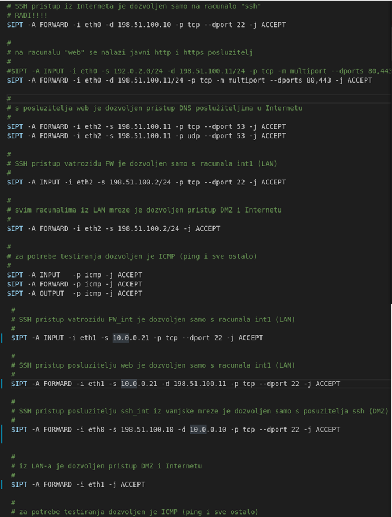

Zadatak 1:
Dodavanjem naredbi u FW.sh i FW_int.sh sam postigao funkcionalnost vatrozida opisanu u tekstu ovog zadatka.

Zadatak 2:
Pokrenuo sam u terminalu sljedeće naredbe:
sudo ./start_fw
sudo ./start_http
$ ssh 198.51.100.10 -> uspješno, konfiguriran je vatrozid da propušta ssh na ssh poslužitelj
$ ssh 198.51.100.11 -> neuspješno, ima smisla jer ssh nije dozvoljen za web poslužitelj
$ ssh 192.0.2.1 -> neuspješno, također ima smisla jer je rečeno da se int1 smije spajat sa ssh na FW
$ ssh 198.51.100.2 -> neuspješno, isti razlozi kao i gore
$ sudo himage int1 ssh 10.0.0.10 -> uspješno, unutar iste lokalne mreže su
$ sudo himage int1 ssh 198.51.100.10 -> uspješno, računala iz lokalne mreže imaju neograničen pristup računalima u DMZ
$ sudo himage int1 ssh 198.51.100.11 ->
$ sudo himage int1 ssh 192.0.2.1 ->
$ sudo himage int1 ssh 198.51.100.2 ->
Otvaranjem stranice http://198.51.100.11 mi se prikazuje sljedeće:
(tu mi fali slika fer test stranice koja se prikaže kada se otvori gore navedena adresa)
Na čvoru ssh sam pokrenuo praćenje dolaznih veza:
sudo himage ssh watch -n 0.5 netstat -ant
Pokretanjem naredbi za detekciju verzija servisa i općeniti scan sam vidio promjene unutar terminala koji prati dolazne veze.
Nakon općenitog scana su se pojavila 4 zapisa sa TIME_WAIT state-om, što je normalno ponašanje nakon zatvaranja sjednice, a nakon detekcije verzije servisa sam vidio još jedan zapis sa state-om ESTABLISHED što znači da uistinu u tom trenutku se uspostavila komunikacija između int1 i ssh.
Zadatak 3:
Korištenjem naredbe hcp ssh_int:/etc/ssh/sshd_config sshd_config_mail sam preuzeo konfiguracijsku datoteku te u njoj izmijenio parametar za port i PermitRootLogin u yes .
Gotovo identičnu naredbu sam koristio za ssh, te obje datoteke vratio nazad na poslužitelje.
Također sam uzeo ubuntu javni ključ te ga upisao u datoteku authorized_keys na oba poslužitelja u folder root/.ssh/ I zatim pokrenuo naredbu ssh -J root@198.51.100.10 root@10.0.0.10 -p 2222
Dodatno bih uključio Kerberos, ChallengeResponseAuthentication i HostbasedAuthentication za veću sigurnost.